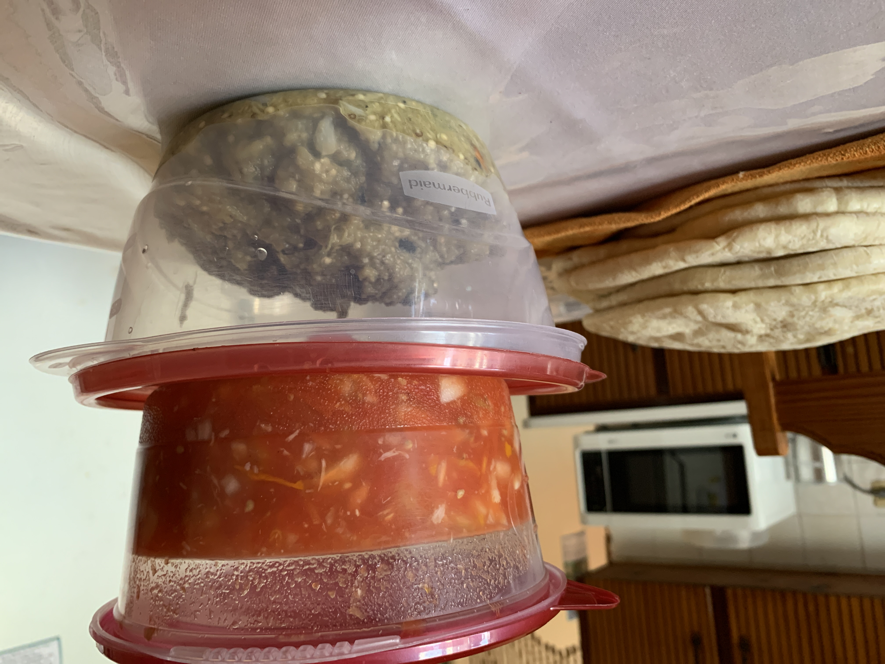
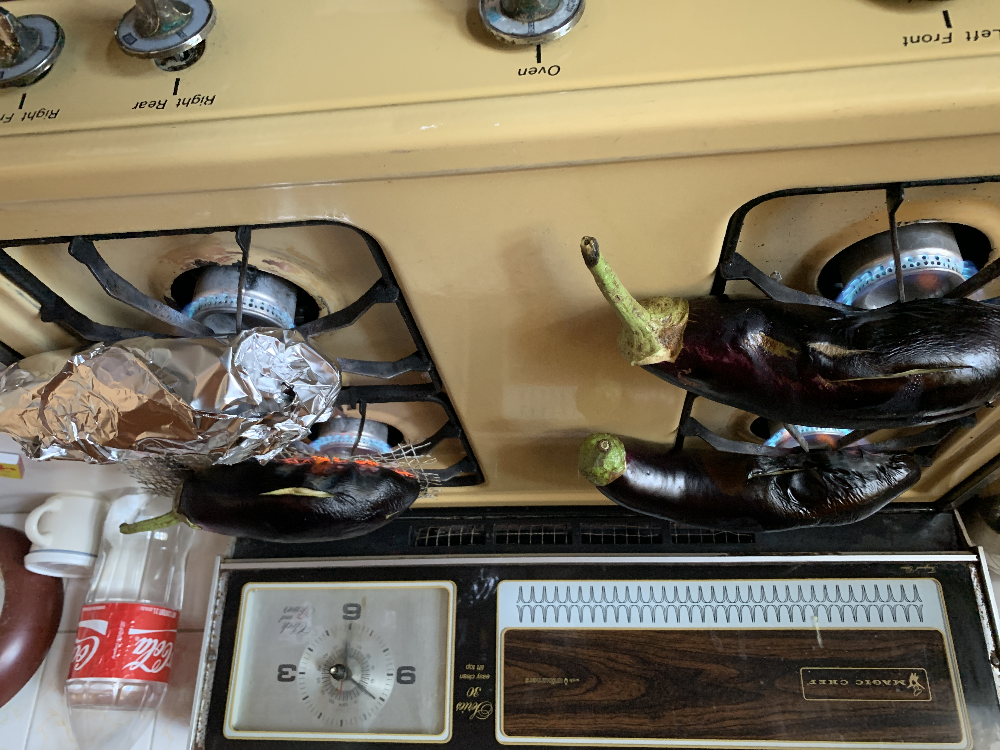
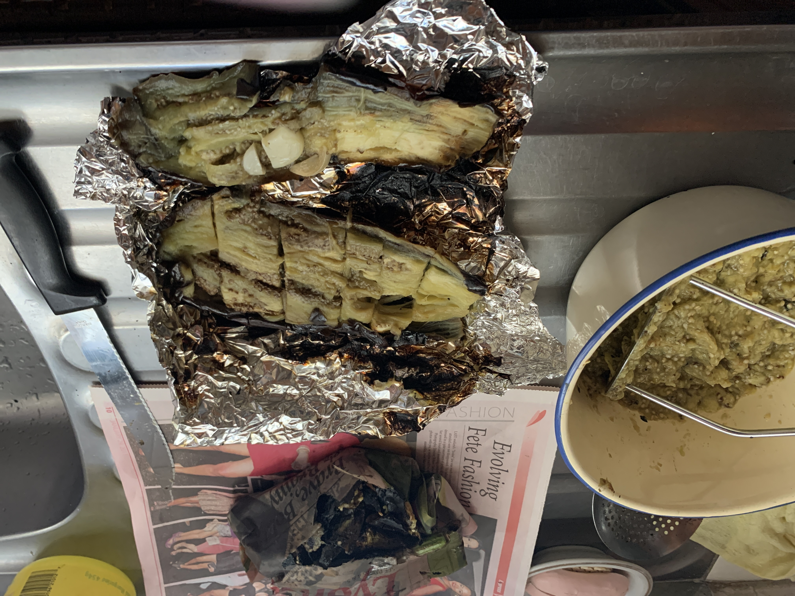
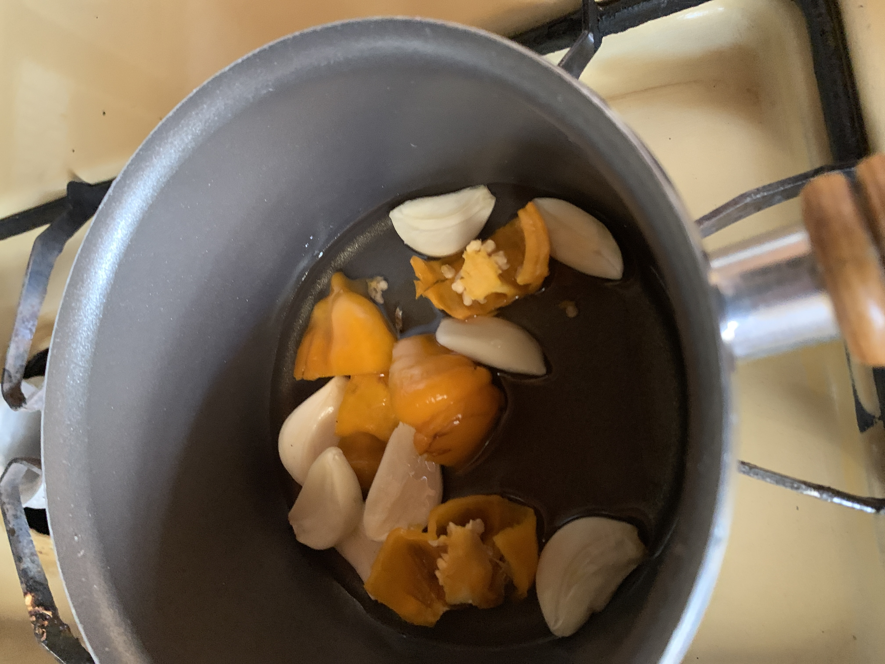
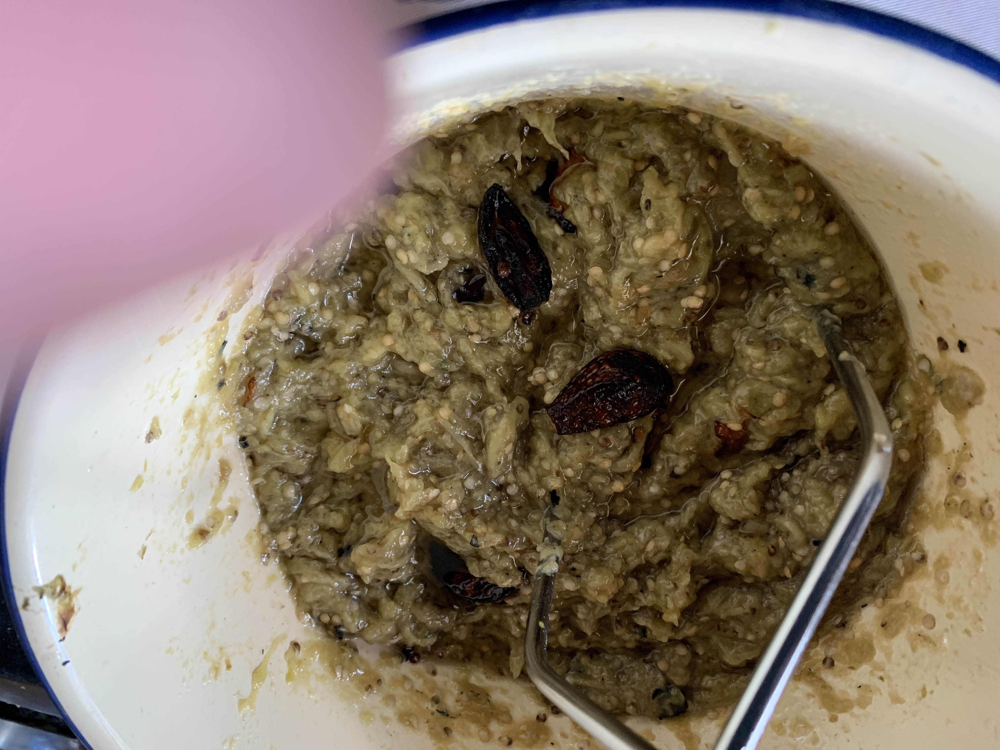

Baigan Choka Recipe
Home

- 2-4 Eggplants
- 5 cloves of garlic + 1 clove per eggplant
- 1.5 (Scotch Bonnet, can replace with Habanero)
- 2 tbs of salt
- Peel garlic, one clove per eggplant
- Split clove and cut each eggplant on either side
- Place half of clove on each side of eggplant
- 
Heat eggplants until soft
(10 minutes until each side)
- After the eggplants are cooked and soft, we're need to cut them open and place them in a bowl. Follow the next steps to do this.
- Cut off the head of the eggplant
- Carve one side open
- Open it like a book
- Dice into chunks without slicing the bottom skin (see image below)
- Scoop the inside out with a spoon and into a bowl

- Crush the eggplant inside the bowl
- Cut up 5 move cloves of garlic and 1.5 Scotch Bonnet pepper
- Fry until the garlic turns black and the pepper turns dark (around ten minutes)

- Add to the extra garlic and pepper to the eggplant bowl and crush it all together

- Serve and enjoy!